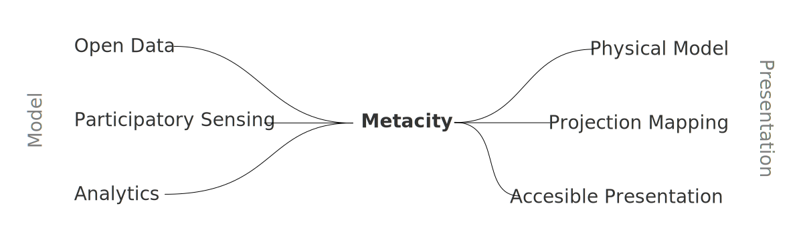

Metacity Concept
Metacity is a modular system streamlining urban data visualization
Metacity is a modular system streamlining urban data visualization
Cities have become a huge source of various data. The urban data usually includes building metadata, street layouts, public transport information, etc.
All plans and future changes are made and approved based on the models derived from the urban data. The models help us answer questions and plan future changes.
The changes influence citizens' daily lives. Local authorities should strive for more interaction between the city administration and the public, which requires a new platform.
A part of this platform is Metacity.
The Metacity is currently being designed and conceptualized. The basic workflow:
The setup of the projection is done in a node editor, which exposes the geometry metadata as well as additional metadata from other input files.
Formats and their support:
Outputs are live views:
The possibilities are endless, but I've come up with two basic plans that would determine the Metacity software's first implemented features. Regardless of the chosen version, the projection mapping view will be capable of displaying guide markers for model placement and projector configuration.
Metacity allows to simplify and export STL models of the terrain and individual buildings.
Metacity allows to simplify the model and produce a voxelized version. Further, the simplified models are partitioned into individual bricks, and manuals for assembly of individual quarters are produced together with the number of bricks needed for assembly.
This project is being developed as a part of a diploma thesis at FEE CTU in cooperation with the following institutions: